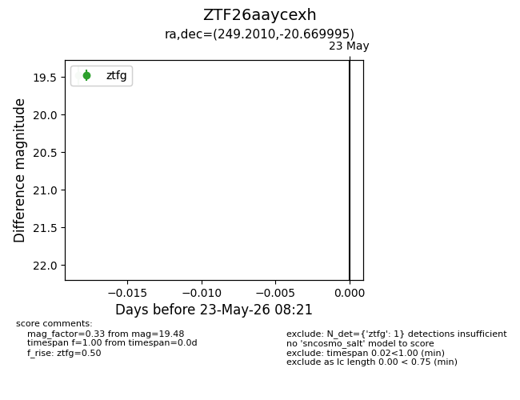
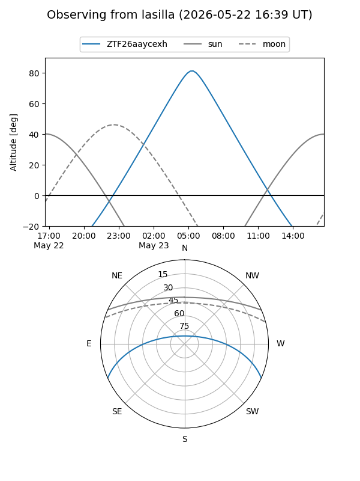
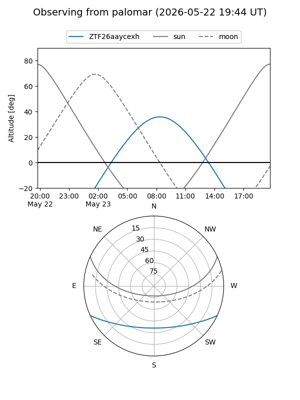

ZTF26aaycexh
Target ZTF26aaycexh at 2026-05-23 08:22
Aliases and brokers:
lsst-FINK: link
lsst-Lasair: link
lsst-ALeRCE: link
ztf-FINK: link
ztf-Lasair: link
ztf-ALeRCE: link
alt names
ZTF26aaycexh (ztf,fink_ztf)
Coordinates:
equatorial (ra, dec) = 249.2010,-20.67000
equatorial (HMS+DMS) = 16:36:48.25,-20:40:11.98
galactic (l, b) = (357.6709,+17.49124)
Flags:
Photometry:
last ztfg=19.48
1 ztfg detections
Lightcurve

Visibility


Additional plots